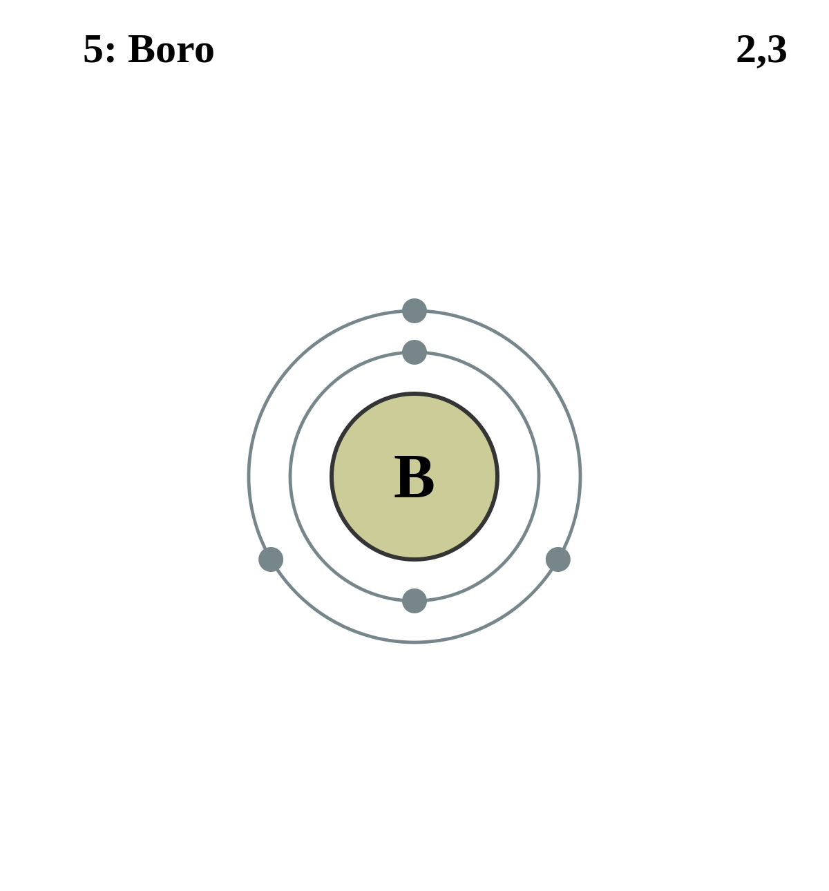

|
|
||
|
BORO No se encuentra libremente en la naturaleza, sino en forma de ácido bórico en aguas termales volcánicas y como boratos. El boro puro y los boratos no son tóxicos, pero algunos compuestos de hidruros de boro son tóxicos y deben manipularse con cuidado. El boro no es un buen conductor de la electricidad a temperatura ambiente, pero su conductividad eléctrica es eficaz a altas temperaturas. En los destellos de fuegos artificiales, el boro proporciona un color verde característico. |
 |
DATOS Número Atómico: 5 Peso Atómico: 10.81 Electronegatividad: 2.04 Configuración Electrónica: [He]2s22p1 Estados de Oxidación: +3 No. de Electrones de Valencia: 3 |